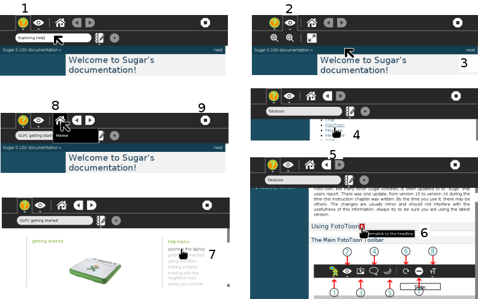

Help¶
Help displays documentation for Sugar and the XO laptop. Start with Sugar Fundamentals for a plain-language explanation of Activities, views, the Frame, collaboration, and the Journal.

The image above is of the top of the screen, when the Activity Help is running. There is a simple range of tabs and buttons on the top row of the toolbar. Starting from the left, they are:
Activity tab or toolbar button.
View toolbar button.
Home button, brings you back to the index, or contents page.
Back button.
Forward button.
Stop, or close the Activity, on the far right of the toolbar.
Tour of Help¶
We see, working clockwise from top left:

Activity tab, here you can enter a name for the page or project. The “pencil and book” icon the Description button allows you to add a description to the Journal entry.
The Collaborating, or sharing, icon is grayed out and not available.
In Help you do not really need to provide a name for the page you are researching, but it allows you to get back to it easily from the Journal.
View toolbar button. The buttons are zoom in, zoom out, and enlarge page to Full screen.
Next button, top right of every page, takes you to the next page of Help.
Follow links in the index to jump to that page. Here the Activity FotoToon is being selected.
Forward and Back buttons help you navigate.
Use this small red icon, only showing when you hover the cursor over it, at the end of a paragraph heading, to place the paragraph well on your screen.
Here we see a link to the OLPC getting started page. Within Help you can follow links, which take you onto the internet, when you are online.
The Home button brings you back to the index, or contents page.
Stop, or close the Activity.
Help read aloud¶
In Help, and other text based Activities, you can have robot Alice (the page Speak introduces Alice) read the page aloud in the background, while you explore the Activity. See Say selected text
 The underlying software used to display Help, and for the user to edit within Help, is Sphinx. To explore the possibilities of documentation made using this software, please follow the link to Sphinx in the footnote below.
The underlying software used to display Help, and for the user to edit within Help, is Sphinx. To explore the possibilities of documentation made using this software, please follow the link to Sphinx in the footnote below.